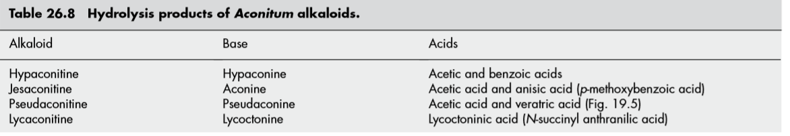
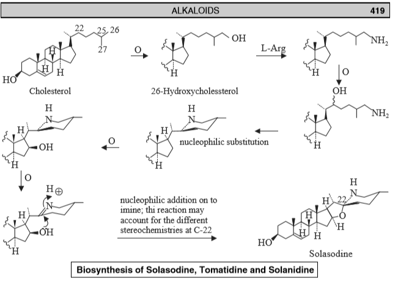
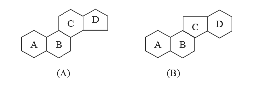
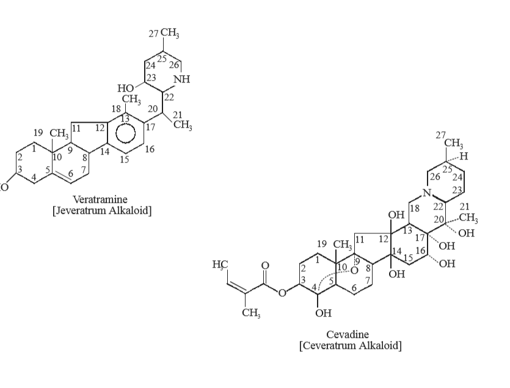
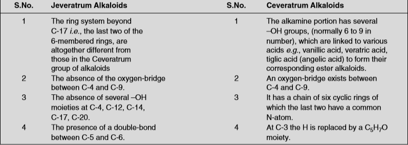

Terpenic and steroidal alkaloids (Aconitum, Solanum, Veratrum)
Terpenoid Alkaloids:
- mono — (skytanthine)-(valeriana root)
- sesq — (patchoulipyridine)
- di — (Aconitum,Delphinum,Taxus spp)
Aconitum alkaloids
A.ACONINE
→ hydrolzed products of aconitine
→ Aconitum napellus Ranunculaceae (aconite root)
→ Western Europe to the Himalayas.
→ obconical in shape+ dark-brown in colour, 4–10 cm long and 1–3 cm diameter at the crown.
- 0.6% of the total alkaloids of aconite, of which approximately one third is the alkaloid aconitine
→ extremely soluble in water, alcohol; moderately soluble in chloroform and slightly soluble in benzene. It is practically insoluble in ether and petroleum ether
- Uses
- It is employed occasionally as analgesic and cardiac depressant.
B. Aconitine
→ he bolanical source is the same as described unde
USES:
- It is exclusively used in producing heart arrythmia in experimental animals.
- 2. It has also been used topically in neuralgia.
- 
STEROIDAL ALKALOIDS (Solanum/Veratrum)
→ an important class of alkaloids that essentially afford a close structural relationship to sterols i.e., they contain a perhydro-1, 2-cyclopentanophenanthrene nucleus.
→ occur plant kingdom as glycosidal combination with carbohydrate moieties.
→ The steroidal alkaloids may be broadly classified into two major groups, namely:
(a) Solanum Alkaloids,
(b) Veratrum Alkaloids
A. Solanum Alkaloids
→ A good number of plants belonging to the natural order Solanaceae → several steroidal alkaloids based on a C27 cholestane skeleton, such as:
- solasodine, tomatidine, solanidine.
→ S. laciniatum and S. aviculare → rich source of alkaloids (i.e., the aglycone moieties) that are employed exclusively as the starting materials for the synthesis of several hormones and adreno-cortical steroids.
- nitrogen-analogues of steroidal saponins
- Unlike, their oxygen counterparts, all these N-containing alkaloids exhibit the same stereochemistry at C-25 (methyl being equatorial always), but C-22 isomers do exist, such as: solasodine and tomatidine.
A.1 Solasodine
→ fruits of Capsicum annuum L. (Solanaceae) (Chili, Paprika, Sweet Peppers);
→ shoots and berries of S. dulcamara L. (Solanaceae) (Bittersweet)
→ leaves of S. nigrum L. (Solanaceae) (Wonderberry)
→ obtained by the hydrolysis of solasonine which yields solasodine, L-rhamnose, Dgalactose and D-glucose respectively. It is the dehydrated product
→ is freely soluble in benzene, pyridine, and chloroform; moderately soluble in ethanol, methanol, and acetone; slightly soluble in water and practically insoluble in ether
USES
- It is invariably used as a starting material for steroidal drugs
A.2 Tomatidine
→ Rutgers tomato plant [Lycopersicon esculentum] Solanaceae
→ It is obtained by the hydrolysis of tomatine to yield a molecule of tomatidine along with 2 moles of D-glucose, 1-mole of D-xylose and 1-mole of D-galactose as depicted below
A.3 Solanidine
→ Capsicum annuum L. (Solanaceae) (Chili, Peppers, Paprika
→ Isolation It is obtained by the hydrolysis of solanine which yields one mole each of L-Rhamnose, D-Galactose, and D-Glucose as shown below.
→ Biosynthesis of Solasodine, Tomatidine and Solanidine Like the sapogenins, the steroidal alkaloids are also derived from cholesterol, with suitable side-chain modification during the course of biochemical sequence of reactions as given unde

B. Veratrum Alkaloids
→ Veratrum alkaloids represent the most important and medicinally significant class of steroidal alkaloids
→ basic ring systems present in the Veratrum alkaloids it's not the same usual steroidal nucleus,
(a)holesterol or in the aglycone residues of the cardiac glycosides
(b)g ‘C’ is a fivemembered ring while ring ‘D’ is a six-membered ring

→ a) Alkamine portion of the ester alkaloids of Veratrum, viz., Protoverine, Veracevine, Germine.
→ b) Alkamine aglycones of glycosidic veratrum alkaloids, viz., Veratramine
⇒ can be classified in two categoroes
(i) Cevaratrum alkaloids,
(ii) Jeveratrum alkaloids
B1.Ceveratrum Alkaloid (Protoveratrines; Veratridine, Cevadine, Germine )
B.1.1 Protoveratrine
→ rhizome of Veratrum album L. (Liliaceae) Veratrum viride Ait. (Liliaceae) (American Hellebore//
→ V. viride
- Group-‘A’: Alkamines (esters of the steroidal bases) with organic acids, including germidine, germitrine, most valued therapeutically; besides, cevadine, neogermitrine, neoprotoveratrine, protoveratrines and veratridine
- Group-‘B’: (Glycosides of the alkamines), mainly pseudojervine and veratrosine,
- Group-‘C’: (Alkamines), germine, jervine, rubijervine, and veratramine.
→ Uses
- It is used as an antihypertensive agent which exerts its action through reflex inhibition of pressor receptors in the heart and carotid sinus.
- It also possesses emetic action. 3. It is used in the treatment of toxemia of pregnancy.
B.1.2 Veratridine +B.1.3 Cevadine
→ Schoenocaulon officinale rhizome of Veratrum album//
→ Cevadine is extremely irritating locally particularly to the mucous membranes. Caution must be used in handling.
B.1.4 Germine
→ of polyester alkaloids that occur in Veratrum and Zygadenus species, such as: Veratrum viride Ait. (Liliaceae)
→ as crystals from methanol
→ Solubility: It is soluble in chloroform, methanol, ethanol, acetone and water; and slightly soluble in ether.
B.2 Jeveratrum Alkaloids
→ he Jeveratrum group of alkaloids is usually represented by the structure of veratramine, jervine and pseudojervine


→ B.2.1 Veratramine
→ Viratrum viride Ait. (Liliaceae) (American Hellebore); and also from Veratrum grandiflorum (Maxim.) Loes. F. (Liliaceae).
→ N-atom is present is in one or more side chains
B.2.2 Jervine
→ Veratrum grandiflorum (Maxim.) Loes F. Veratrum album L., and Veratrum viride Sol. (Liliaceae).
B.2.3 Pseudojervin
→ Veratrum viride Ait (Liliaceae) (American Hellebore); V. album L. (Liliaceae); and V. eschscholtzii Gray. (Liliaceae).
Note: It is, however, pertinent to observe here that the Zygadenus species and the Schoenocaulon species appear to have only the Ceveratrum alkaloids and practically no Jeveratrum alkaloids. Interestingly, the large number of Veratrum species seem to contain both these type of steroidal alkaloids
{kind=link}
{kind=link}
{kind=link}
{kind=link}
{kind=link}
{kind=link}